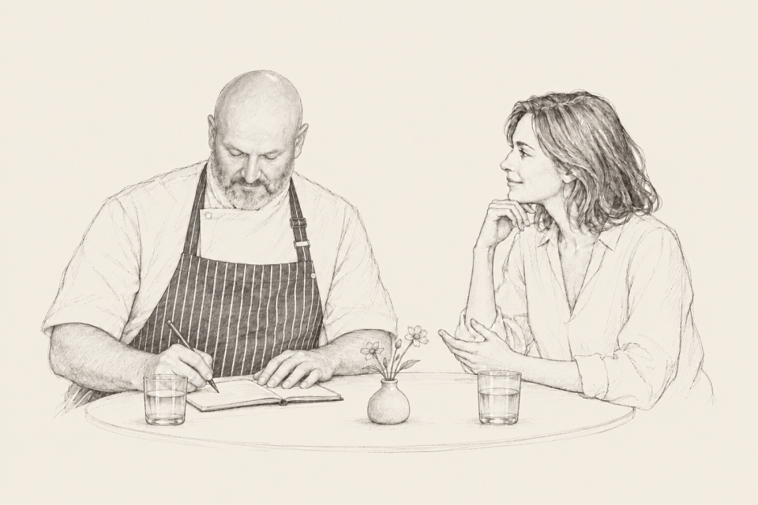

От разговора — к вашему столу
-
Знакомимся
Расскажите, по какому поводу собираетесь и сколько будет гостей. Вспомним любимые блюда, обсудим, что хочется попробовать и чего точно не должно быть в меню.
Можно прийти с готовой идеей. Можно начать с одного пожелания.
